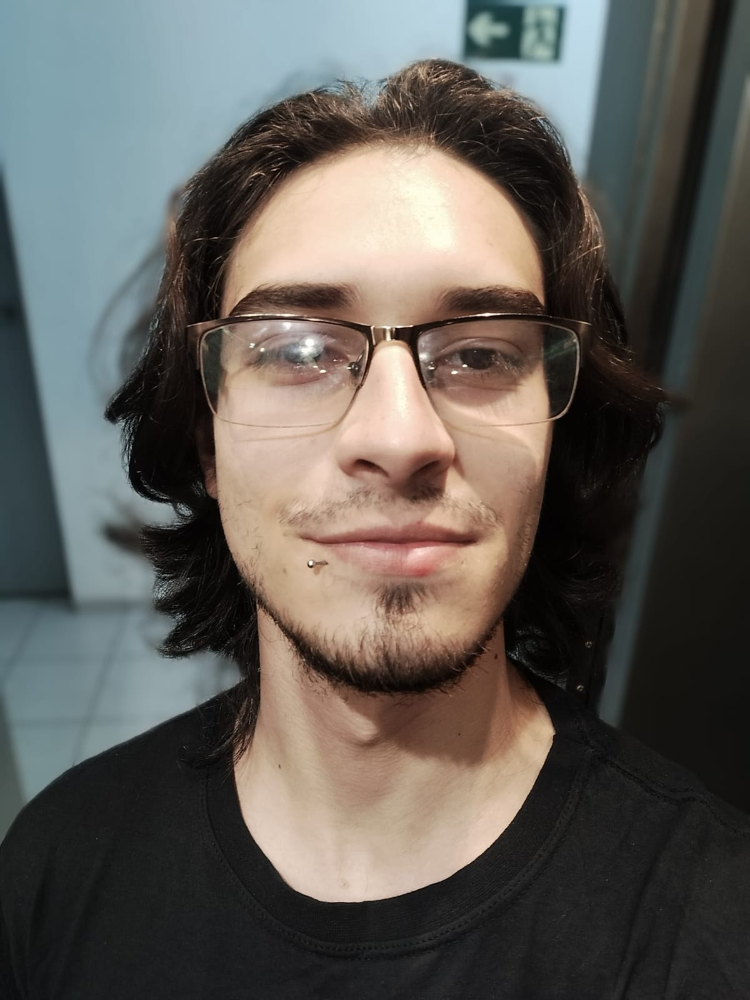

Inicializando... AMAZE AMAZE AMAZE

Meu interesse por tecnologia nasceu da curiosidade — pela astronomia, pela engenharia aeroespacial e pela lógica por trás de um bom problema matemático. Sou enxadrista nas horas vagas, músico com apresentações públicas pela minha cidade, e atualmente canalizo essa mesma curiosidade construindo um jogo de estratégia espacial inspirado em Ender's Game, que é um aclamado romance de ficção científica militar escrito por Orson Scott Card, publicado em 1985, e mesclando histórias reais da nossa astronomia, como o sobrevoo da Voyager 2 por Netuno. Acredito que dados, sistemas e boas histórias têm mais em comum do que parecem, acredito que elas se complementam e são interdependentes. Um dado leva consigo a história que, lida corretamente, pinta um sistema — e é essa interseção que me trouxe até aqui.